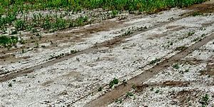

Land Details
Soils:
Soil is the mixture of rock debris and organic materials which develop on the earth’s surface. The major factors affecting the formation of soil are relief, parent material, climate, vegetation and other life-forms and time. Besides these, human activities also influence it to a large extent. Components of the soil are mineral particles, humus, water and air. The actual amount of each of these depend upon the type of soil. Some soils are deficient in one or more of these, while there are some others that have varied combinations
CLASSIFICATION OF SOILS
On the basis of genesis, colour,
composition and location, the soils of India
have been classified into:
(i) Alluvial soils
(ii) Black soils
(iii) Red and Yellow soils
(iv) Laterite soils
(v) Arid soils
(vi) Saline soils
(vii) Peaty soils
(viii) Forest soils.
Alluvial Soils
Alluvial soils are widespread in the northern plains and the river valleys. These soils cover about 40 per cent of the total area of the country. They are depositional soils, transported and deposited by rivers and streams. Through a narrow corridor in Rajasthan, they extend into the plains of Gujarat. In the Peninsular region, they are found in deltas of the east coast and in the river valleys.
Black Soil
Black soil covers most of the Deccan Plateau which includes parts of Maharashtra, Madhya Pradesh, Gujarat, Andhra Pradesh and some parts of Tamil Nadu. In the upper reaches of the Godavari and the Krishna, and the north western part of the Deccan Plateau, the black soil is very deep. These soils are also known as the ‘Regur Soil’ or the ‘Black Cotton Soil’. The black soils are generally clayey, deep and impermeable. They swell and become sticky when wet and shrink when dried. So, during the dry season, these soil develop wide cracks. Thus, there occurs a kind of ‘self ploughing’. Because of this character of slow absorption and loss of moisture, the black soil retains the moisture for a very long time, which helps the crops, especially, the rain fed ones, to sustain even during the dry season.Chemically, the black soils are rich in lime, iron, magnesia and alumina. They also contain potash. But they lack in phosphorous, nitrogen and organic matter. The colour of the soil ranges from deep black to grey.
Red and Yellow Soil
Red soil develops on crystalline igneous rocks in areas of low rainfall in the eastern and southern part of the Deccan Plateau. Along the piedmont zone of the Western Ghat, long stretch of area is occupied by red loamy soil. Yellow and red soils are also found in parts of Odisha and Chattisgarh and in the southern parts of the middle Ganga plain. The soil develops a reddish colour due to a wide diffusion of iron in crystalline and metamorphic rocks. It looks yellow when it occurs in a hydrated form. The fine-grained red and yellow soils are normally fertile, whereas coarse-grained soils found in dry upland areas are poor in fertility. They are generally poor in nitrogen, phosphorous and humus.
Laterite Soil
Laterite has been derived from the Latin word ‘Later’ which means brick. The laterite soils develop in areas with high temperature and high rainfall. These are the result of intense leaching due to tropical rains. With rain, lime and silica are leached away, and soils rich in iron oxide and aluminium compound are left behind. Humus content of the soil is removed fast by bacteria that thrives well in high temperature. These soils are poor in organic matter, nitrogen, phosphate and calcium, while iron oxide and potash are in excess. Hence, laterites are not suitable for cultivation; however, application of manures and fertilisers are required for making the soils fertile for cultivation

Arid Soils
Arid soils range from red to brown in colour. They are generally sandy in structure and saline in nature. In some areas, the salt content is so high that common salt is obtained by evaporating the saline water. Due to the dry climate, high temperature and accelerated evaporation, they lack moisture and humus. Nitrogen is insufficient and the phosphate content is normal. Lower horizons of the soil are occupied by ‘kankar’ layers because of the increasing calcium content downwards. The ‘Kankar’ layer formation in the bottom horizons restricts the infiltration of water, and as such when irrigation is made available, the soil moisture is readily available for a sustainable plant growth. Arid soils are characteristically developed in western Rajasthan, which exhibit characteristic arid topography. These soils are poor and contain little humus and organic matter
Saline Soils
They are also known as Usara soils. Saline soils contain a larger proportion of sodium, potassium and magnesium, and thus, they are infertile, and do not support any vegetative growth. They have more salts, largely because of dry climate and poor drainage. They occur in arid and semi-arid regions, and in waterlogged and swampy areas. Their structure ranges from sandy to loamy. They lack in nitrogen and calcium. Saline soils are more widespread in western Gujarat, deltas of the eastern coast and in Sunderban areas of West Bengal. In the Rann of Kuchchh, the Southwest Monsoon brings salt particles and deposits there as a crust. Seawater intrusions in the deltas promote the occurrence of saline soils. In the areas of intensive cultivation with excessive use of irrigation, especially in areas of green revolution, the fertile alluvial soils are becoming saline. Excessive irrigation with dry climatic conditions promotes capillary action, which results in the deposition of salt on the top layer of the soil. In such areas, especially in Punjab and Haryana, farmers are advised to add gypsum to solve the problem of salinity in the soil.
Peaty Soils
They are found in the areas of heavy rainfall and high humidity, where there is a good growth of vegetation. Thus, large quantity of dead organic matter accumulates in these areas, and this gives a rich humus and organic content to the soil. Organic matter in these soils may go even up to 40-50 per cent. These soils are normally heavy and black in colour. At many places, they are alkaline also. It occurs widely in the northern part of Bihar, southern part of Uttaranchal and the coastal areas of West Bengal, Orissa and Tamil Nadu.

Forest Soils
As the name suggests, forest soils are formed in the forest areas where sufficient rainfall is available. The soils vary in structure and texture depending on the mountain environment where they are formed. They are loamy and silty on valley sides and coarse-grained in the upper slopes. In the snow-bound areas of the Himalayas, they experience denudation, and are acidic with low humus content. The soils found in the lower valleys are fertile. It is evident from the foregoing discussions that soils, their texture, quality and nature are vital for the germination and growth of plant and vegetation including crops. Soils are living systems. Like any other organism, they too develop and decay, get degraded, respond to proper treatment if administered in time. These have serious repercussions on other components of the system of which they themselves are important parts.